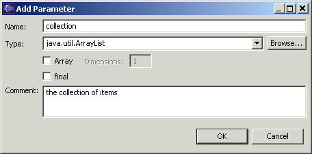
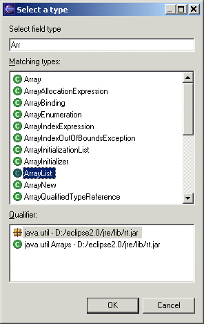

Add Parameter DialogThe Add Parameter Dialog allows you to create or edit the specification of a method parameter.  NameThe name field allows you to enter or edit the name of the method parameter. TypeThe type field allows you to enter the name of the type of the method parameter. A drop-down list is also provided from which you can select any primitive type. If you click on the button labeled "Browse..." beside the type field, a Select Type Dialog will be opened to allow you to select the name of the type rather than type it in directly.  ArrayThe Array check box allows you to specify whether the type of the parameter is an array type. If the check box is selected, the type entered above will then be the base type for the array type. DimensionsThe dimensions field, which is only enabled if the Array check box is selected, allows you to enter the number of dimensions for the array type. finalThe final check box allows you to specify whether the parameter should be marked as being final. OKClose the dialog, creating or editing the parameter, as appropriate. CancelClose the dialog without creating or editing the parameter. |